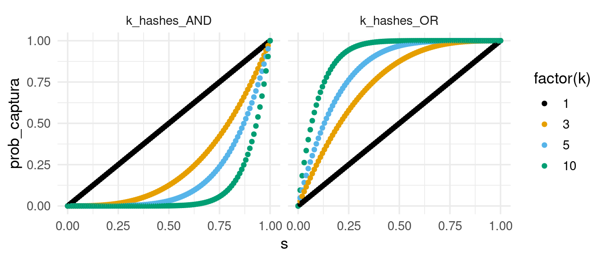
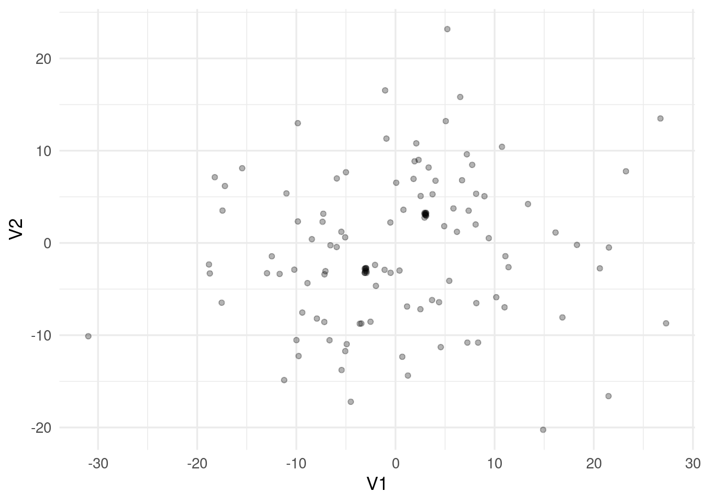
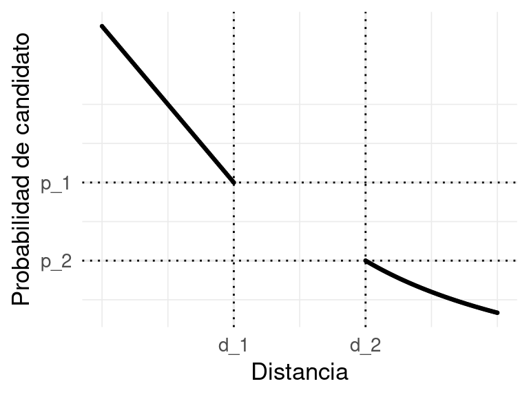

3 Similitud y vecinos cercanos
En esta parte consideraremos la tarea de agrupar eficientemente elementos muy similares en conjuntos datos masivos.
Algunos ejemplos de esta tarea son:
- Encontrar documentos similares en una colección de documentos. Esto puede servir para detectar plagio, deduplicar noticias o páginas web, hacer matching de datos de dos fuentes (por ejemplo, nombres completos de personas), etc. Ver por ejemplo Google News.
- Encontrar usuarios similares (Netflix), en el sentido de que tienen gustos similares, o películas similares, en el sentido de qe le gustan a las mismas personas.
- Encontrar imágenes similares en una colección grande, ver por ejemplo Pinterest.
- Uber: rutas similares que indican (fraude o abusos)[https://eng.uber.com/lsh/].
- Deduplicar registros de usuarios de algún servicio (por ejemplo, beneficiarios de programas sociales).
Estos problemas no son triviales por dos razones:
- Los elementos que queremos comparar muchas veces están naturalmente representados en espacios de dimensión alta, y es relativamente costoso comparar un par (documentos, imágenes, usuarios, rutas). Muchas veces es preferible construir una representación más compacta y hacer comparaciones con las versiones comprimidas.
- Si la colección de elementos es grande (\(N\)), entonces el número de pares posibles es del orden de \(N^2\), y es muy costoso hacer todas las posibles comparaciones para encontrar los elementos similares (por ejemplo, comparar \(100\) mil documentos, con unas \(10\) mil comparaciones por segundo, tardaría alrededor de \(5\) días).
Si tenemos que calcular todas las similitudes, no hay mucho qué hacer. Pero muchas veces nos interesa encontrar pares de similitud alta, o completar tareas más específicas como contar duplicados, etc. En estos casos, veremos que es posible construir soluciones probabilísticas aproximadas para resolver estos problemas de forma escalable.
Aunque veremos más adelante métricas de similitud comunes como la dada por la distancia euclideana o distancia coseno, por ejemplo, en esta primera parte nos concentramos en discutir similitud entre pares de textos. Los textos los podemos ver como colecciones de palabras, o de manera más general, como colecciones de cadenas.
3.1 Similitud de conjuntos
Muchos de estos problemas de similitud se pueden pensar como problemas de similitud entre conjuntos. Por ejemplo, los documentos son conjuntos de palabras, conjuntos de pares de palabras, sucesiones de caracteres, una película se puede ver como el conjunto de personas a las que les gustó, o una ruta como un conjunto de tramos, etc.
Hay muchas medidas que son útiles para cuantificar la similitud entre conjuntos. Una que es popular, y que explotaremos por sus propiedades, es la similitud de Jaccard:
Esta medida cuantifica qué tan cerca está la unión de \(A\) y \(B\) de su intersección. Cuanto más parecidos sean \(A\cup B\) y \(A\cap B\), más similares son los conjuntos. En términos geométricos, es el área de la intersección entre el área de la unión.
Ejercicio
Calcula la similitud de Jaccard entre los conjuntos \(A=\{5,2,34,1,20,3,4\}\) y \(B=\{19,1,2,5\}\)
library(tidyverse)
options(digits = 3)
sim_jaccard <- \(a, b) length(intersect(a, b)) / length(union(a, b))
sim_jaccard(c(0,1,2,5,8), c(1,2,5,8,9))
## [1] 0.667
sim_jaccard(c(2,3,5,8,10), c(1,8,9,10))
## [1] 0.286
sim_jaccard(c(3,2,5), c(8,9,1,10))
## [1] 03.2 Representación de documentos como conjuntos
Hay varias maneras de representar documentos como conjuntos. Las más simples son:
- Los documentos son colecciones de palabras, o conjuntos de sucesiones de palabras de tamaño \(n\).
- Los documentos son colecciones de caracteres, o conjuntos de sucesiones de caracteres (cadenas) de tamaño \(k\).
La primera representación se llama representación de n-gramas, y la segunda representación de k-tejas, o \(k\)-shingles. Nótese que en ambos casos, representaciones de dos documentos con secciones parecidas acomodadas en distintos lugares tienden a ser similares.
Consideremos una colección de textos cortos:
textos <- c("el perro persigue al gato pero no lo alcanza",
"el gato persigue al perro, pero no lo alcanza",
"este es el documento de ejemplo",
"este no es el documento de los ejemplos",
"documento más corto",
"otros animales pueden ser mascotas")Abajo mostramos la representacion en bolsa de palabras (1-gramas) y la representación en bigramas (2-gramas) de los primeros dos documentos:
# Bolsa de palabras (1-gramas)
tokenizers::tokenize_ngrams(textos[1:2], n = 1) |> map(unique)## [[1]]
## [1] "el" "perro" "persigue" "al" "gato" "pero" "no"
## [8] "lo" "alcanza"
##
## [[2]]
## [1] "el" "gato" "persigue" "al" "perro" "pero" "no"
## [8] "lo" "alcanza"# bigramas
tokenizers::tokenize_ngrams(textos[1:2], n = 2) |> map(unique)## [[1]]
## [1] "el perro" "perro persigue" "persigue al" "al gato"
## [5] "gato pero" "pero no" "no lo" "lo alcanza"
##
## [[2]]
## [1] "el gato" "gato persigue" "persigue al" "al perro"
## [5] "perro pero" "pero no" "no lo" "lo alcanza"La representación en k-tejas es otra posibilidad:
calcular_tejas <- function(x, k = 2){
tokenizers::tokenize_character_shingles(x, n = k, lowercase = FALSE,
simplify = TRUE, strip_non_alpha = FALSE)
}
# 2-tejas
calcular_tejas(textos[1:2], k = 2) |> map(unique)## [[1]]
## [1] "el" "l " " p" "pe" "er" "rr" "ro" "o " "rs" "si" "ig" "gu" "ue" "e " " a"
## [16] "al" " g" "ga" "at" "to" " n" "no" " l" "lo" "lc" "ca" "an" "nz" "za"
##
## [[2]]
## [1] "el" "l " " g" "ga" "at" "to" "o " " p" "pe" "er" "rs" "si" "ig" "gu" "ue"
## [16] "e " " a" "al" "rr" "ro" "o," ", " " n" "no" " l" "lo" "lc" "ca" "an" "nz"
## [31] "za"# 4-tejas:"
calcular_tejas(textos[1:2], k = 4) |> map(unique)## [[1]]
## [1] "el p" "l pe" " per" "perr" "erro" "rro " "ro p" "o pe" "pers" "ersi"
## [11] "rsig" "sigu" "igue" "gue " "ue a" "e al" " al " "al g" "l ga" " gat"
## [21] "gato" "ato " "to p" "pero" "ero " "ro n" "o no" " no " "no l" "o lo"
## [31] " lo " "lo a" "o al" " alc" "alca" "lcan" "canz" "anza"
##
## [[2]]
## [1] "el g" "l ga" " gat" "gato" "ato " "to p" "o pe" " per" "pers" "ersi"
## [11] "rsig" "sigu" "igue" "gue " "ue a" "e al" " al " "al p" "l pe" "perr"
## [21] "erro" "rro," "ro, " "o, p" ", pe" "pero" "ero " "ro n" "o no" " no "
## [31] "no l" "o lo" " lo " "lo a" "o al" " alc" "alca" "lcan" "canz" "anza"Observaciones:
- Los tokens son las unidades básicas de análisis. Los tokens son palabras para los n-gramas (cuya definición no es del todo simple) y caracteres para las k-tejas. Podrían ser también oraciones, por ejemplo.
- Nótese que en ambos casos es posible hacer algo de preprocesamiento para obtener la representación. Transformaciones usuales son:
- Eliminar puntuación y/o espacios.
- Convertir los textos a minúsculas.
- Esto incluye decisiones acerca de qué hacer con palabras compuestas (por ejemplo, con un guión), palabras que denotan un concepto (Reino Unido, por ejemplo) y otros detalles.
- Si lo que nos interesa principalmente similitud textual (no significado, o polaridad, etc.) entre documentos, entonces podemos usar \(k\)-tejas, con un mínimo de preprocesamiento. Esta representación es simple y flexible en el sentido de que se puede adaptar para documentos muy cortos (mensajes o tweets, por ejemplo), pero también para documentos más grandes.
Por estas razones, no concentramos por el momento en \(k\)-tejas
Tejas (shingles)
Sea \(k>0\) un entero. Las \(k\)-tejas (\(k\)-shingles) de un documento d es el conjunto de todas las corridas (distintas) de \(k\) caracteres sucesivos. Escogemos \(k\) suficientemente grande, de forma que la probabilidad de que una teja particular ocurra en un texto dado sea relativamente baja.Ejemplo
Documentos textualmente similares tienen tejas similares:
# calcular tejas
textos
## [1] "el perro persigue al gato pero no lo alcanza"
## [2] "el gato persigue al perro, pero no lo alcanza"
## [3] "este es el documento de ejemplo"
## [4] "este no es el documento de los ejemplos"
## [5] "documento más corto"
## [6] "otros animales pueden ser mascotas"
tejas_doc <- calcular_tejas(textos, k = 4)
# calcular similitud de jaccard entre algunos pares
sim_jaccard(tejas_doc[[1]], tejas_doc[[2]])
## [1] 0.773
sim_jaccard(tejas_doc[[1]], tejas_doc[[3]])
## [1] 0
sim_jaccard(tejas_doc[[4]], tejas_doc[[5]])
## [1] 0.156Podemos calcular todas las similitudes:
tejas_tbl <- crossing(id_1 = 1:length(textos), id_2 = 1:length(textos)) |>
filter(id_1 < id_2) |>
mutate(tejas_1 = tejas_doc[id_1], tejas_2 = tejas_doc[id_2]) |>
mutate(sim = map2_dbl(tejas_1, tejas_2, ~sim_jaccard(.x, .y))) |>
select(id_1, id_2, sim)
tejas_tbl## # A tibble: 15 × 3
## id_1 id_2 sim
## <int> <int> <dbl>
## 1 1 2 0.773
## 2 1 3 0
## 3 1 4 0.0137
## 4 1 5 0
## 5 1 6 0
## 6 2 3 0
## 7 2 4 0.0133
## 8 2 5 0
## 9 2 6 0
## 10 3 4 0.6
## 11 3 5 0.189
## 12 3 6 0
## 13 4 5 0.156
## 14 4 6 0
## 15 5 6 0pero nótese que, como señalamos arriba, esta operación será muy costosa incluso si la colección de textos es de tamaño moderado.
Si los textos son cortos, entonces basta tomar valores como \(k=4,5\), pues hay un total de \(27^4\) tejas de tamaño \(4\), y el número de tejas de un documento corto (mensajes, tweets) es mucho más bajo que \(27^4\) (nota: ¿puedes explicar por qué este argumento no es exactamente correcto?)
Para documentos grandes, como noticias o artículos, es mejor escoger un tamaño más grande, como \(k=9,10\), pues en documentos largos puede haber cientos de miles de caracteres. Si \(k\) fuera más chica entonces una gran parte de las tejas aparecerá en muchos de los documentos, y todos los documentos tendrían similitud alta.
Evitamos escoger \(k\) demasiado grande, pues entonces los únicos documentos similares tendrían que tener subcadenas largas exactamente iguales. Por ejemplo: “Batman y Robin” y “Robin y Batman” son algo similares si usamos tejas de tamaño 3, pero son muy distintas si usamos tejas de tamaño 8:
Ejemplo
tejas_1 <- calcular_tejas("Batman y Robin", k = 3)
tejas_2 <- calcular_tejas("Robin y Batman", k = 3)
sim_jaccard(tejas_1, tejas_2)## [1] 0.6tejas_1 <- calcular_tejas("Batman y Robin", k = 8)
tejas_2 <- calcular_tejas("Robin y Batman", k = 8)
sim_jaccard(tejas_1, tejas_2)## [1] 03.3 Representación matricial
Podemos usar una matriz binaria para guardar todas las representaciones en k-tejas de nuestra colección de documentos. Puede usarse una representación rala (sparse) si es necesario:
dtejas_tbl <- tibble(id = paste0("doc_", 1:length(textos)),
tejas = tejas_doc) |>
unnest(cols = tejas) |>
unique() |> mutate(val = 1) |>
pivot_wider(names_from = id, values_from = val, values_fill = list(val = 0)) |>
arrange(tejas) # opcionalmente ordenamos tejas
dtejas_tbl## # A tibble: 123 × 7
## tejas doc_1 doc_2 doc_3 doc_4 doc_5 doc_6
## <chr> <dbl> <dbl> <dbl> <dbl> <dbl> <dbl>
## 1 " al " 1 1 0 0 0 0
## 2 " alc" 1 1 0 0 0 0
## 3 " ani" 0 0 0 0 0 1
## 4 " cor" 0 0 0 0 1 0
## 5 " de " 0 0 1 1 0 0
## 6 " doc" 0 0 1 1 0 0
## 7 " eje" 0 0 1 1 0 0
## 8 " el " 0 0 1 1 0 0
## 9 " es " 0 0 1 1 0 0
## 10 " gat" 1 1 0 0 0 0
## # … with 113 more rows¿Cómo calculamos la similitud de Jaccard usando estos datos?
Calcular la unión e intersección se puede hacer haciendo OR y AND de las columnas, y entonces podemos calcular la similitud
inter_12 <- sum(dtejas_tbl$doc_1 & dtejas_tbl$doc_2)
union_12 <- sum(dtejas_tbl$doc_1 | dtejas_tbl$doc_2)
similitud <- inter_12/union_12
similitud # comparar con el número que obtuvimos arriba.## [1] 0.773El cálculo para todos los documentos podríamos hacerlo (aunque veremos que normalmente no haremos esto si no necesitamos calcular todas las similitudes) con:
mat_td <- dtejas_tbl |> select(-tejas) |> as.matrix() |> t()
1 - dist(mat_td, method = "binary")## doc_1 doc_2 doc_3 doc_4 doc_5
## doc_2 0.7727
## doc_3 0.0000 0.0000
## doc_4 0.0137 0.0133 0.6000
## doc_5 0.0000 0.0000 0.1892 0.1556
## doc_6 0.0000 0.0000 0.0000 0.0000 0.00003.4 Minhash y reducción probabilística de dimensionalidad
Para una colección grande de documentos la representación binaria de la colección de documentos puede tener un número muy grande de renglones. Puede ser posible crear un número más chico de nuevos features (ojo: aquí los renglones son las “variables,” y los casos son las columnas) con los que sea posible obtener una buena aproximación de la similitud.
La idea básica es la siguiente:
- Escogemos una función al azar (una función hash) que mapea cadenas cortas a un número grande de enteros, de manera existe muy baja probabilidad de colisiones, y no hay correlación entre las cadenas y el valor al que son mapeados.
- Si un documento tiene tejas \(T\), aplicamos la función hash a cada teja de \(T\), y calculamos el mínimo de estos valores hash.
- Repetimos este proceso para varias funciones hash fijas, por ejemplo \(k= 5\)
- Los valores mínimos obtenidos nos dan una representación en dimensión baja de cada documento.
Ejemplo
textos_tbl <- tibble(doc_id = 1:length(textos), texto = textos)
tejas_tbl <- tibble(doc_id = 1:length(textos), tejas = tejas_doc)
tejas_tbl## # A tibble: 6 × 2
## doc_id tejas
## <int> <list>
## 1 1 <chr [41]>
## 2 2 <chr [42]>
## 3 3 <chr [28]>
## 4 4 <chr [36]>
## 5 5 <chr [16]>
## 6 6 <chr [31]>Creamos una función hash:
set.seed(813)
generar_hash <- function(){
r <- as.integer(stats::runif(1, 1, 2147483647))
funcion_hash <- function(tejas){
digest::digest2int(tejas, seed = r)
}
funcion_hash
}
h_1 <- generar_hash()Y aplicamos la función a cada teja del documento 1, y tomamos el mínimo:
hashes_1 <- h_1(tejas_tbl$tejas[[1]])
hashes_1## [1] -1318809190 -1534091290 -1401861150 -1601894665 781339434 -519860631
## [7] 2116727945 -1824301917 -1401861150 -1371561364 -1385084918 -821046029
## [13] 1766711521 1952075680 569109680 -1412107908 1059544482 -1866546594
## [19] 2090868926 -455965089 784118133 1421354549 -1397404756 -481987742
## [25] -1824301917 -1401861150 1157451749 698137483 -623448608 544014704
## [31] -587926856 1455454405 950121497 -165719415 2119479774 2115904977
## [37] 1519310299 1652203243 -667865842 1219377605 -1500087628minhash_1 <- min(hashes_1)
minhash_1## [1] -1866546594Consideramos este minhash como un descriptor del documento. Generalmente usamos más de un descriptor. En el siguiente ejemplo usamos 4 funciones hash creadas de manera independiente:
hashes <- map(1:4, ~ generar_hash())
docs_firmas <- tejas_tbl |>
mutate(firma = map(tejas, \(lista) map_int(hashes, \(h) min(h(lista))))) |>
select(doc_id, firma) |>
unnest_wider(firma, names_sep = "_")
docs_firmas## # A tibble: 6 × 5
## doc_id firma_1 firma_2 firma_3 firma_4
## <int> <int> <int> <int> <int>
## 1 1 -2129712961 -2124594172 -2073157333 -1982715048
## 2 2 -2129712961 -2124594172 -2073157333 -1982715048
## 3 3 -2139075502 -2093452194 -1959662839 -2048484934
## 4 4 -2139075502 -2093452194 -1959662839 -2048484934
## 5 5 -2106131386 -2093452194 -2127642881 -1984764210
## 6 6 -2115397946 -2087727654 -2074217109 -1986993146Nótese ahora que en documentos muy similares, varios de los minhashes coinciden. Esto es porque la teja donde ocurrió el mínimo está en los dos documentos. Entonces cuando los las tejas de dos documentos son muy similares, es muy probable que sus minhashes coincidan.
¿Cuál es la probabilidad de que la firma coincida para un documento?
Ahora damos un argumento para demostrar este resultado:
Supongamos que el total de tejas de los dos documentos es \(|A\cup B|\), y el número de tejas que tienen en común es \(|A\cap B|\). Sea \(h\) la función hash que escogimos al azar.
Para fijar ideas, puedes suponer que las tejas están numeradas \(1,\ldots, M\), y la función hash es una permutación aleatoria de estos números.
Entonces:
- El mínimo de \(h\) puede ocurrir en cualquier elemento de \(|A\cup B|\) con la misma probabilidad.
- Los minhashes de \(a\) y \(b\) coinciden si y sólo si el mínimo de \(h\) ocurre en un elemento de \(|A\cap B|\)
- Por 1 y 2, la probabilidad de que esto ocurra es \[\frac{|A\cap B|}{|A\cup B|},\] que es la similitud de Jaccard.
Nótese que esto requiere que la familia de donde escogemos nuestra función hash cumple, al menos aproximadamente, las propiedades 1 y 2. Para que 1 ocurra, la familia debe ser suficientemente grande y variada: por ejemplo, esto fallaría si todas las cadenas que comienzan con “a” se mapean a números chicos. Para que ocurra 2, no debe haber colisiones (cadenas distintas que se mapean al mismo valor).
Observaciónes:
Una familia que cumple de manera exacta estas dos propiedades es la familia de permutaciones que mencionamos arriba: numeramos las tejas, construimos una permutación al azar, y luego aplicamos esta función de permutaciones a los índices de las tejas. La razón por la que esta familia no es utiliza típicamente es porque es costosa si el número de tejas es grande: primero hay que escoger un ordenamiento al azar, y luego es necesario almacenarlo.
Muchas veces, se utiliza una función hash con aritmética modular como sigue: sea \(M\) el número total de tejas, y sea \(p\) un número primo fijo grande (al menos \(p > M\)). Numeramos las tejas. Ahora escogemos dos enteros \(a\) y \(b\) al azar, y hacemos \[h(x) = (ax + b\mod p) \mod M\] Estas funciones se pueden seleccionar y aplicar rápidamente, y sólo tenemos que almacenar los coeficientes \(a\) y \(b\).
En el enfoque que vimos arriba, utilizamos directamente una función hash de cadenas que está diseñada para cumplir 1 y 2 de manera aproximada.
3.5 Agrupando textos de similitud alta
Nuestro siguiente paso es evitar hacer la comparación de todos los pares de descriptores. Para esto hacemos un clustering no exhaustivo basado en los descriptores que acabamos de construir.
Recordemos que tenemos
docs_firmas## # A tibble: 6 × 5
## doc_id firma_1 firma_2 firma_3 firma_4
## <int> <int> <int> <int> <int>
## 1 1 -2129712961 -2124594172 -2073157333 -1982715048
## 2 2 -2129712961 -2124594172 -2073157333 -1982715048
## 3 3 -2139075502 -2093452194 -1959662839 -2048484934
## 4 4 -2139075502 -2093452194 -1959662839 -2048484934
## 5 5 -2106131386 -2093452194 -2127642881 -1984764210
## 6 6 -2115397946 -2087727654 -2074217109 -1986993146Ahora agrupamos documentos que comparten alguna firma. A los grupos que coinciden en cada firma les llamamos cubetas:
cubetas_tbl <- docs_firmas |> pivot_longer(contains("firma_"), "n_firma") |>
mutate(cubeta = paste(n_firma, value)) |>
group_by(cubeta) |>
summarise(documentos = list(doc_id)) |>
mutate(num_docs = map_int(documentos, length))
cubetas_tbl## # A tibble: 15 × 3
## cubeta documentos num_docs
## <chr> <list> <int>
## 1 firma_1 -2106131386 <int [1]> 1
## 2 firma_1 -2115397946 <int [1]> 1
## 3 firma_1 -2129712961 <int [2]> 2
## 4 firma_1 -2139075502 <int [2]> 2
## 5 firma_2 -2087727654 <int [1]> 1
## 6 firma_2 -2093452194 <int [3]> 3
## 7 firma_2 -2124594172 <int [2]> 2
## 8 firma_3 -1959662839 <int [2]> 2
## 9 firma_3 -2073157333 <int [2]> 2
## 10 firma_3 -2074217109 <int [1]> 1
## 11 firma_3 -2127642881 <int [1]> 1
## 12 firma_4 -1982715048 <int [2]> 2
## 13 firma_4 -1984764210 <int [1]> 1
## 14 firma_4 -1986993146 <int [1]> 1
## 15 firma_4 -2048484934 <int [2]> 2Ahora filtramos las cubetas que tienen más de un elemento:
cubetas_tbl <- cubetas_tbl |>
filter(num_docs > 1)
cubetas_tbl ## # A tibble: 8 × 3
## cubeta documentos num_docs
## <chr> <list> <int>
## 1 firma_1 -2129712961 <int [2]> 2
## 2 firma_1 -2139075502 <int [2]> 2
## 3 firma_2 -2093452194 <int [3]> 3
## 4 firma_2 -2124594172 <int [2]> 2
## 5 firma_3 -1959662839 <int [2]> 2
## 6 firma_3 -2073157333 <int [2]> 2
## 7 firma_4 -1982715048 <int [2]> 2
## 8 firma_4 -2048484934 <int [2]> 2Y de aquí extraemos pares candidatos que tienen alta probabilidad de ser muy similares:
pares_tbl <- cubetas_tbl |>
mutate(pares_cand = map(documentos, ~ combn(.x, 2, simplify = FALSE))) |>
select(cubeta, pares_cand) |>
unnest(pares_cand) |>
unnest_wider(pares_cand, names_sep = "_")
pares_tbl## # A tibble: 10 × 3
## cubeta pares_cand_1 pares_cand_2
## <chr> <int> <int>
## 1 firma_1 -2129712961 1 2
## 2 firma_1 -2139075502 3 4
## 3 firma_2 -2093452194 3 4
## 4 firma_2 -2093452194 3 5
## 5 firma_2 -2093452194 4 5
## 6 firma_2 -2124594172 1 2
## 7 firma_3 -1959662839 3 4
## 8 firma_3 -2073157333 1 2
## 9 firma_4 -1982715048 1 2
## 10 firma_4 -2048484934 3 4pares_tbl <- pares_tbl |> select(-cubeta) |>
unique()
pares_tbl## # A tibble: 4 × 2
## pares_cand_1 pares_cand_2
## <int> <int>
## 1 1 2
## 2 3 4
## 3 3 5
## 4 4 5Nótese que con este proceso evitamos hacer todas las comparaciones, y el método tiene complejidad lineal en el tamaño de la colección de documentos. Una vez que tenemos los pares, podemos calcular la similitud exacta de solamente esos documentos:
pares_tbl |>
left_join(tejas_tbl |> rename(pares_cand_1 = doc_id, texto_1 = tejas)) |>
left_join(tejas_tbl |> rename(pares_cand_2 = doc_id, texto_2 = tejas)) |>
mutate(score = map2_dbl(texto_1, texto_2, ~ sim_jaccard(.x, .y))) |>
select(-contains("texto"))## Joining, by = "pares_cand_1"## Joining, by = "pares_cand_2"## # A tibble: 4 × 3
## pares_cand_1 pares_cand_2 score
## <int> <int> <dbl>
## 1 1 2 0.773
## 2 3 4 0.6
## 3 3 5 0.189
## 4 4 5 0.156Si queremos capturar solamente aquellos pares de similitud muy alta, podemos también combinar firmas para formar cubetas donde las dos firmas coinciden:
cubetas_tbl <- docs_firmas |>
mutate(cubeta = paste(firma_1, firma_2)) |>
group_by(cubeta) |>
summarise(documentos = list(doc_id)) |>
mutate(num_docs = map_int(documentos, length))
cubetas_tbl## # A tibble: 4 × 3
## cubeta documentos num_docs
## <chr> <list> <int>
## 1 -2106131386 -2093452194 <int [1]> 1
## 2 -2115397946 -2087727654 <int [1]> 1
## 3 -2129712961 -2124594172 <int [2]> 2
## 4 -2139075502 -2093452194 <int [2]> 2pares_tbl <- cubetas_tbl |>
filter(num_docs > 1) |>
mutate(pares_cand = map(documentos, ~ combn(.x, 2, simplify = FALSE))) |>
select(cubeta, pares_cand) |>
unnest(pares_cand) |>
unnest_wider(pares_cand, names_sep = "_") |>
left_join(tejas_tbl |> rename(pares_cand_1 = doc_id, texto_1 = tejas)) |>
left_join(tejas_tbl |> rename(pares_cand_2 = doc_id, texto_2 = tejas)) |>
mutate(score = map2_dbl(texto_1, texto_2, ~ sim_jaccard(.x, .y))) |>
select(-contains("texto"))## Joining, by = "pares_cand_1"## Joining, by = "pares_cand_2"pares_tbl## # A tibble: 2 × 4
## cubeta pares_cand_1 pares_cand_2 score
## <chr> <int> <int> <dbl>
## 1 -2129712961 -2124594172 1 2 0.773
## 2 -2139075502 -2093452194 3 4 0.63.6 Ejemplo: tweets
Ahora buscaremos tweets similares en una colección de un dataset de kaggle.
ruta <- "../datos/FIFA.csv"
if(!file.exists(ruta)){
fifa <- read_csv("https://fifatweets.s3.amazonaws.com/FIFA.csv")
write_csv(fifa, "../datos/FIFA.csv")
} else {
fifa <- read_csv(ruta)
}## Rows: 530000 Columns: 16## ── Column specification ────────────────────────────────────────────────────────
## Delimiter: ","
## chr (9): lang, Source, Orig_Tweet, Tweet, Hashtags, UserMentionNames, UserM...
## dbl (6): ID, len, Likes, RTs, Followers, Friends
## dttm (1): Date##
## ℹ Use `spec()` to retrieve the full column specification for this data.
## ℹ Specify the column types or set `show_col_types = FALSE` to quiet this message.tw <- fifa$Tweet
tw[1:10]## [1] "Only two goalkeepers have saved three penalties in penalty shoot out Ricardo vs"
## [2] "scores the winning penalty to send into the quarter finals where they will face Russia"
## [3] "Tonight we have big game"
## [4] "We get stronger Turn the music up now We got that power power"
## [5] "Only two goalkeepers have saved three penalties in penalty shoot out Ricardo vs"
## [6] "We re looking strong going into the knockout stage We caught up with ahead of"
## [7] "am happy for winning Especially since you know we colluded and all Russia eliminates Spain after penalty"
## [8] "When you see me When we feel the same feeling Power power"
## [9] "Kasper Schmeichel takes the final award of the day"
## [10] "After Years Global Puma Ambassador LG Mobile Ambassador CocaCola WorldCup Kookmin Bank UNICEF"set.seed(9192)
num_tweets <- 100000
system.time(tejas_doc <- calcular_tejas(tw[1:num_tweets], k = 5))## user system elapsed
## 2.71 0.02 2.73tejas_tbl <- tibble(doc_id = 1:num_tweets, tejas = tejas_doc)
hash_f <- map(1:50, ~ generar_hash())
system.time(
docs_firmas <- tejas_tbl |>
mutate(firma = map(tejas, \(lista) map_int(hash_f, \(h) min(h(lista))))) |>
select(doc_id, firma)) ## user system elapsed
## 26.019 0.019 26.053docs_firmas## # A tibble: 100,000 × 2
## doc_id firma
## <int> <list>
## 1 1 <int [50]>
## 2 2 <int [50]>
## 3 3 <int [50]>
## 4 4 <int [50]>
## 5 5 <int [50]>
## 6 6 <int [50]>
## 7 7 <int [50]>
## 8 8 <int [50]>
## 9 9 <int [50]>
## 10 10 <int [50]>
## # … with 99,990 more rowsLa firma de minhashes del primer documento es por ejemplo:
docs_firmas$firma[1]## [[1]]
## [1] -1953455759 -2112001395 -2031432865 -2108080560 -2095602723 -2118858341
## [7] -2099337985 -1978298401 -2092751862 -2097330616 -1897306653 -2139645671
## [13] -1981364640 -2081406116 -2127003388 -2138613184 -2146084782 -2082312909
## [19] -2083329993 -2001255852 -2091106849 -2091293600 -2120806067 -2095725804
## [25] -2143199361 -2091159512 -2124095195 -2038461037 -2109684884 -2073791594
## [31] -2129542593 -1904599938 -2118234795 -2056298394 -2105031889 -2113931139
## [37] -2134167293 -2140440957 -1717523835 -2144768923 -2138027225 -2084388635
## [43] -2110278901 -2135431955 -2139423769 -2130397390 -2097742891 -2105787557
## [49] -2101425996 -1941363605Y probaremos primero hacer cubetas con algunas las firmas (las cuatro primeras por ejemplo):
docs_firmas <- docs_firmas |>
mutate(cubeta_nombre = map_chr(firma, \(x) paste(x[1:3], collapse = "-")))
docs_cubetas_tbl <-
docs_firmas |>
group_by(cubeta_nombre) |>
summarise(docs = list(doc_id)) |>
mutate(num_docs = map_int(docs, length))
docs_cubetas_filt_tbl <- docs_cubetas_tbl |>
filter(num_docs > 1)Y examinamos ahora algunas de las cubetas:
docs_ejemplo <- docs_cubetas_filt_tbl$docs[[125]]
tw[docs_ejemplo]## [1] "We got That power power" "We got That power power"
## [3] "We got That power power"docs_ejemplo <- docs_cubetas_filt_tbl$docs[[1658]]
length(docs_ejemplo)## [1] 406tw[docs_ejemplo][1:2]## [1] "short story involving Nigeria Argentina and France"
## [2] "short story involving Nigeria Argentina and France"docs_ejemplo <- docs_cubetas_filt_tbl$docs[[4958]]
tw[docs_ejemplo]## [1] "The keeps on serving us more and more drama If you missed any of the great moments from todays fixtures yo"
## [2] "The keeps on serving us more and more drama If you missed any of the great moments from todays fixtures yo"
## [3] "The keeps on serving us more and more drama If you missed any of the great moments from todays fixtures yo"
## [4] "The keeps on serving us more and more drama If you missed any of the great moments from todays fixtures you can watch the highlights on"
## [5] "The keeps on serving us more and more drama If you missed any of the great moments from todays fixtures you can watch the highlights on"Con este método, podemos extraer pares de muy alta similitud (cercano a duplicados) de forma eficiente en colecciones grandes de texto.
3.7 Verificar si un nuevo elemento es duplicado
Si tenemos un nuevo entrada, podemos checar si es duplicado calculando su firma, formando la cubetas, y revisando si cae en alguna de las cubetas conocidas. Nótese que tenemos que guardar las funciones hash que usamos para aplicar a los nuevos datos, y repetir el proceso exactamente como procesamos los datos originales. Por ejemplo:
nuevos_tweets <- 150000:150005
tw[nuevos_tweets]## [1] "It should sound the song that was on the Show of the great fountain of Dubai Please play of"
## [2] "PARK CHANYEOL Please play of"
## [3] "What Game Congratulations to on reaching the quarter finals with but commiserations to Marcos"
## [4] "For the fans of the vs rivalry Mbappe Cristiano Ronaldo fan has ended Messis dream of winning the"
## [5] "Messi How far Suarez could not make it to the quarterfinals you know what to do Suarez Roger"
## [6] "Got few daubes all right had to put him in when was painting low Thankfully painting finished another bit later after the"system.time(tejas_nuevas_doc <- calcular_tejas(tw[nuevos_tweets], k = 5))## user system elapsed
## 0.001 0.000 0.001tejas_nuevas_tbl <- tibble(doc_id = nuevos_tweets, tejas = tejas_nuevas_doc)
system.time(
docs_nuevas_firmas <- tejas_nuevas_tbl |>
mutate(firma = map(tejas, \(lista) map_int(hash_f, \(h) min(h(lista))))) |>
select(doc_id, firma)) ## user system elapsed
## 0.008 0.000 0.008docs_nuevas_firmas## # A tibble: 6 × 2
## doc_id firma
## <int> <list>
## 1 150000 <int [50]>
## 2 150001 <int [50]>
## 3 150002 <int [50]>
## 4 150003 <int [50]>
## 5 150004 <int [50]>
## 6 150005 <int [50]>docs_nuevas_firmas <- docs_nuevas_firmas |>
mutate(cubeta_nombre = map_chr(firma, \(x) paste(x[1:3], collapse = "-")))
docs_cubetas_nuevas_tbl <-
docs_nuevas_firmas |>
group_by(cubeta_nombre) |>
summarise(docs = list(doc_id)) |>
mutate(num_docs = map_int(docs, length))
docs_cubetas_nuevas_tbl## # A tibble: 6 × 3
## cubeta_nombre docs num_docs
## <chr> <list> <int>
## 1 -2041983150--2147447475--2129777399 <int [1]> 1
## 2 -2051683951--2053274679--2125528528 <int [1]> 1
## 3 -2108824716--2032083428--2137254712 <int [1]> 1
## 4 -2113147634--2140751096--2058622652 <int [1]> 1
## 5 -2139603446--2140751096--2090996001 <int [1]> 1
## 6 -2142045021--2054826468--2129777399 <int [1]> 1Y ahora podemos hacer un semi-join con las cubetas:
cand_duplicados_tbl <- docs_cubetas_nuevas_tbl |> semi_join(docs_cubetas_tbl |> select(cubeta_nombre))## Joining, by = "cubeta_nombre"cand_duplicados_tbl## # A tibble: 3 × 3
## cubeta_nombre docs num_docs
## <chr> <list> <int>
## 1 -2041983150--2147447475--2129777399 <int [1]> 1
## 2 -2113147634--2140751096--2058622652 <int [1]> 1
## 3 -2142045021--2054826468--2129777399 <int [1]> 1Y vemos que tenemos tres candidatos a duplicados. Checamos el primer tweet:
cubeta_1 <- cand_duplicados_tbl |> pull(cubeta_nombre) |> pluck(1)
doc_1 <- cand_duplicados_tbl |> pull(docs) |> pluck(1)
cubeta_1## [1] "-2041983150--2147447475--2129777399"doc_1## [1] 150004# en la tabla original de todos los tweets
doc_2 <- filter(docs_cubetas_tbl, cubeta_nombre == cubeta_1) |>
pull(docs) |> pluck(1)
doc_2[1]## [1] 36839Checamos los tweets:
tw[doc_2[1]]## [1] "Messi How far Suarez could not make it to the quarterfinals you know what to do Suarez Roger"tw[doc_1]## [1] "Messi How far Suarez could not make it to the quarterfinals you know what to do Suarez Roger"Y efectivamente detectamos que el nuevo tweet es duplicado. Otra vez, no fue necesario hacer una comparación exhaustiva del nuevo tweet contra nuestra colección inicial grande.
Ejercicio: checa los otros candidatos a duplicados que encontramos en este ejemplo.
3.8 Controlando la sensibilidad y umbral de similitud
En algunos casos nos pueden interesar encontrar duplicados muy cercanos, y en otros problemas quisiéramos capturar pares con un umbral más bajo de similitud. Usando distinto número de hashes podemos hacer esto. En primer lugar, sabemos que un la probabilidad de que dos minhashes coincidan es igual a la similitud de jaccard de los dos textos correspondientes.
- Si \(s\) es la similitud de Jaccard entre \(a\) y \(b\), entonces:
\[P(f_h(a) = f_h(b)) = s(a,b) = s\] Si escogemos \(k\) hashes al azar, y definimos candidatos solamente cuando coincidan todos los hashes (construcción AND), la probabilidad de hacer un par candidatos es:
\[P(f_1(a) = f_1(b), \ldots, f_k(a)=f_k(b)) = s^k\] Por otro lado, si consideramos un par candidato cuando al menos alguno de los minhashes coinciden (construcción OR), la probabilidad que \(a\) y \(b\) sean candidatos es:
\[P(f_j(a) = f_j(b) \, \textrm{ para alguna } j) = 1-(1-s)^k\]
Podemos graficar estas probabilidades con distintos valores de \(k\)
k <- 3
prob_captura <- tibble(s = seq(0, 1, 0.01)) |>
crossing(tipo = c("k_hashes_AND", "k_hashes_OR")) |>
crossing(k = c(1, 3, 5, 10)) |>
mutate(prob_captura = ifelse(tipo == "k_hashes_AND", s^k, 1 - (1 - s)^k))
ggplot(prob_captura, aes(x = s, y = prob_captura, colour = factor(k))) +
geom_point() +
facet_wrap(~ tipo)
Nótese que:
- Si queremos tener muy alta probabilidad de capturar todos los pares similares, podemos usar la construcción OR con k = 3 para similitud mayor a 0.75 o k = 10 para similitud mayor a 0.3, por ejemplo
- La desventaja de esto, es que es posible que obtengamos muchos candidatos que realmente no tienen la similitud deseada (falsos positivos). Esto implica más procesamiento.
- Si solo queremos capturar pares de muy alta similitud (por ejemplo > 0.98), y no es grave que tengamos algunos falsos negativos, podemos usar la construcción AND con 1 o 3 hashes por ejemplo, y obtendremos un número más manejable de pares candidatos para procesar.
- La desventaja de esto es que es posible obtener algunos falsos negativos. Depende de la aplicación esto puede ser aceptable o no.
A partir de un umbral \(s\) de similitud para los pares que queremos capturar, podemos usar varios minhashes para afinar el método:
- Usamos la construcción OR con varios hashes para capturar pares de alta o mediana similitud con mucha confianza. Generalmente es necesario filtrar falsos positivos.
- Usamos la construcción AND con uno o varios hashes para pares de muy alta similitud con confianza alta. Tendremos menos falsos positivos, pero también es posible tener más falsos negativos (se nos escapan algunos pares muy similares).
Nota: es posible combinar estas técnicas para refinar la captura de pares a un nivel de similitud dado haciendo bandas de hashes: por ejemplo, si tenemos 20 hashes podemos hacer 4 bandas de 5 hashes, usamos AND para cada grupo de 5 hashes y OR para las 4 bandas. Para más de esto, revisa nuestro texto (Leskovec, Rajaraman, and Ullman 2014).
3.9 Distancia euclideana y LSH
Ahora aplicamos estas ideas para otro tipo de similitud. En este caso, consideramos la distancia euclideana usual en dimensión \(p\):
\[d(x,y) = \sqrt{(x_1 - y_1)^2 + (x_2 - y_2)^2 +\cdots (x_p - y_p)^2}\] Y nuestra tarea es encontrar todos los pares tales que su distancia euclideana es muy cercana a 0. Es decir, queremos hacer “clusters” pero sólo de datos muy cercanos, igual que en los ejemplos de similitud de jaccard.
Para distancia euclideana nuestros hashes resultan de proyecciones aleatorias rectas fijas en cubetas. La idea general es que tomamos una línea al azar en el espacio de entradas, y la dividimos en cubetas de manera uniforme. El valor hash de un punto \(x\) es el número de cubeta donde cae la proyección de \(x\).
Más especificamente, si escogemos un ancho \(r\) de cubeta:
- Escogemos una dirección al azar \(v\)
- El hash de un punto \(x\) se calcula como sigue:
- Calculamos el tamaño de la proyección \(x\) sobre \(v\)
- Dividimos este tamaño entre \(r\)
- el hash la parte entera de este último número
Es decir, \[h(x) = \left\lfloor{ \frac{x\cdot v}{r}}\right\rfloor\]
Ejercicio: haz un dibujo de este proceso, y cómo se calcula el hash de un punto \(x\) una vez que tienes \(r\) y \(v\).
Por ejemplo, si \(v=(1,2)\), y \(r = 1\):
library(tidyverse)
norma <- function(x) sqrt(sum(x^2))
v <- c(1,2) / norma(c(1,2))
v## [1] 0.447 0.894hash_1 <- function(x) floor(sum(x * v) / 1)
hash_1(c(5,0))## [1] 2hash_1(c(0,-1))## [1] -1Construimos ahora nuestra función generadora de hashes:
gen_hash <- function(p, r){
v <- rnorm(p)
v <- v / norma(v)
# devolvemos una función que calcula la cubeta:
function(x){
floor(sum(x * v) / r) |> as.integer()
}
}
set.seed(823)
hash_1 <- gen_hash(2, 1)
# los hashes de dos puntos:
hash_1(c(4, 7))## [1] -7hash_1(c(-4, 7))## [1] 0# el vector que escogimos es
environment(hash_1)$v## [1] -0.914 -0.405Ejemplo
La siguiente función genera dos clusters de puntos mezclados con puntos distribuidos normales con desviación estándar relativamente grande
set.seed(1021)
simular_puntos <- function(d = 2, n = 200){
#puntos muy cercanos a (3,3,..., 3):
mat_1 <- matrix(rnorm(10 * d, sd = 0.01) + 3, ncol = d)
#puntos muy cercanos a (-3,-3,..., -3):
mat_2 <- matrix(rnorm(10 * d, sd = 0.01) - 3, ncol = d)
# puntos distribuidos alrededor del origen:
mat_3 <- matrix(rnorm(n * d, sd = 10), ncol = d)
datos_tbl_vars <- rbind(mat_3, mat_1, mat_2) |>
as_tibble() |>
mutate(id_1 = row_number())
datos_tbl_vars
}
# diez puntos en cluster 1, diez en cluster 2, y 100 sin cluster:
datos_tbl_vars <- simular_puntos(d = 2, n = 100)## Warning: The `x` argument of `as_tibble.matrix()` must have unique column names if `.name_repair` is omitted as of tibble 2.0.0.
## Using compatibility `.name_repair`.
## This warning is displayed once every 8 hours.
## Call `lifecycle::last_lifecycle_warnings()` to see where this warning was generated.ggplot(datos_tbl_vars, aes(x = V1, y= V2)) +
geom_jitter(width = 0.5, height = 0.5, alpha = 0.3)
Para este ejemplo calculamos las distancias reales:
dist_e <- function(x, y){
norma(x - y)
}
datos_tbl <- datos_tbl_vars |>
pivot_longer(-id_1, names_to = "variable", values_to = "valor") |>
group_by(id_1) |>
arrange(variable) |>
summarise(vec_1 = list(valor))
system.time(
pares_tbl <- datos_tbl |>
crossing(datos_tbl |>
rename(id_2 = id_1, vec_2 = vec_1)) |>
filter(id_1 < id_2) |>
mutate(dist = map2_dbl(vec_1, vec_2, dist_e))
)## user system elapsed
## 0.026 0.000 0.025pares_tbl |> head()## # A tibble: 6 × 5
## id_1 vec_1 id_2 vec_2 dist
## <int> <list> <int> <list> <dbl>
## 1 1 <dbl [2]> 2 <dbl [2]> 7.07
## 2 1 <dbl [2]> 3 <dbl [2]> 24.2
## 3 1 <dbl [2]> 4 <dbl [2]> 29.0
## 4 1 <dbl [2]> 5 <dbl [2]> 24.9
## 5 1 <dbl [2]> 6 <dbl [2]> 3.31
## 6 1 <dbl [2]> 7 <dbl [2]> 16.2nrow(pares_tbl)## [1] 7140Supongamos que queremos encontrar los puntos que están a distancia menor a 1:
pares_sim <- pares_tbl |> filter(dist < 1)
nrow(pares_sim)## [1] 103Ahora veremos cómo encontrar estos 103 pares de puntos cercanos.
Cálculo de firmas
Usaremos 4 hashes con tamaño de cubeta = 0.2:
#generar hashes
hash_f <- map(1:4, ~ gen_hash(p = 2, r = 0.2))
# esta es una función de conveniencia:
calculador_hashes <- function(hash_f){
function(z) {
map_int(hash_f, ~ .x(z))
}
}
calc_hashes <- calculador_hashes(hash_f)Calculamos las firmas:
firmas_tbl <- datos_tbl_vars |>
pivot_longer(cols = -id_1, names_to = "variable", values_to = "valor") |>
group_by(id_1) |>
summarise(vec_1 = list(valor)) |>
mutate(firma = map(vec_1, ~ calc_hashes(.x))) |>
select(id_1, firma)
firmas_tbl## # A tibble: 120 × 2
## id_1 firma
## <int> <list>
## 1 1 <int [4]>
## 2 2 <int [4]>
## 3 3 <int [4]>
## 4 4 <int [4]>
## 5 5 <int [4]>
## 6 6 <int [4]>
## 7 7 <int [4]>
## 8 8 <int [4]>
## 9 9 <int [4]>
## 10 10 <int [4]>
## # … with 110 more rowsfirmas_tbl$firma[[1]]## [1] -88 14 14 -87firmas_tbl$firma[[2]]## [1] -91 48 48 -92Para este ejemplo, consideraremos todos los pares que coinciden en al menos una cubeta (hacemos disyunción o construcción OR de los 4 hashes):
cubetas_tbl <- firmas_tbl |>
unnest(firma) |>
group_by(id_1) |>
mutate(hash_no = 1:4) |>
mutate(cubeta = paste(hash_no, firma, sep = "/"))
cubetas_tbl## # A tibble: 480 × 4
## # Groups: id_1 [120]
## id_1 firma hash_no cubeta
## <int> <int> <int> <chr>
## 1 1 -88 1 1/-88
## 2 1 14 2 2/14
## 3 1 14 3 3/14
## 4 1 -87 4 4/-87
## 5 2 -91 1 1/-91
## 6 2 48 2 2/48
## 7 2 48 3 3/48
## 8 2 -92 4 4/-92
## 9 3 -24 1 1/-24
## 10 3 88 2 2/88
## # … with 470 more rowsAhora agrupamos cubetas y filtramos las que tienen más de un elemento
cubetas_tbl <- cubetas_tbl |> group_by(cubeta) |>
summarise(ids = list(id_1), n = length(id_1)) |>
filter(n > 1)
cubetas_tbl## # A tibble: 79 × 3
## cubeta ids n
## <chr> <list> <int>
## 1 1/-1 <int [2]> 2
## 2 1/-13 <int [2]> 2
## 3 1/-16 <int [4]> 4
## 4 1/-21 <int [11]> 11
## 5 1/-28 <int [2]> 2
## 6 1/-32 <int [2]> 2
## 7 1/-41 <int [2]> 2
## 8 1/-44 <int [2]> 2
## 9 1/-54 <int [2]> 2
## 10 1/-55 <int [2]> 2
## # … with 69 more rowsY finalmente, extraemos los pares candidatos:
candidatos_tbl <-
cubetas_tbl |>
mutate(pares_cand = map(ids, ~ combn(.x, 2, simplify = FALSE))) |>
select(cubeta, pares_cand) |>
unnest(pares_cand) |>
unnest_wider(pares_cand, names_sep = "_") |>
select(-cubeta) |>
unique()
candidatos_tbl## # A tibble: 219 × 2
## pares_cand_1 pares_cand_2
## <int> <int>
## 1 25 34
## 2 30 85
## 3 8 33
## 4 8 40
## 5 8 80
## 6 33 40
## 7 33 80
## 8 40 80
## 9 100 111
## 10 100 112
## # … with 209 more rowsnrow(candidatos_tbl)## [1] 219En este caso, seguramente tenemos algunos falsos positivos que tenemos que filtrar, y quizá algunos falsos negativos.
Calculamos distancias para todos los pares candidatos (es una lista mucho más corta generalmente):
puntos_tbl <- datos_tbl_vars |>
pivot_longer(V1:V2) |>
group_by(id_1) |>
select(-name) |>
summarise(punto = list(value))
candidatos_tbl <-
candidatos_tbl |>
left_join(puntos_tbl |> rename(pares_cand_1 = id_1, punto_1 = punto)) |>
left_join(puntos_tbl |> rename(pares_cand_2 = id_1, punto_2 = punto))## Joining, by = "pares_cand_1"## Joining, by = "pares_cand_2"candidatos_tbl## # A tibble: 219 × 4
## pares_cand_1 pares_cand_2 punto_1 punto_2
## <int> <int> <list> <list>
## 1 25 34 <dbl [2]> <dbl [2]>
## 2 30 85 <dbl [2]> <dbl [2]>
## 3 8 33 <dbl [2]> <dbl [2]>
## 4 8 40 <dbl [2]> <dbl [2]>
## 5 8 80 <dbl [2]> <dbl [2]>
## 6 33 40 <dbl [2]> <dbl [2]>
## 7 33 80 <dbl [2]> <dbl [2]>
## 8 40 80 <dbl [2]> <dbl [2]>
## 9 100 111 <dbl [2]> <dbl [2]>
## 10 100 112 <dbl [2]> <dbl [2]>
## # … with 209 more rowspares_similares_tbl <-
candidatos_tbl |>
mutate(dist = map2_dbl(punto_1, punto_2, dist_e)) |>
filter(dist < 1)nrow(pares_similares_tbl)## [1] 96Probando con datos de “gold standard”
En este caso, sabemos cuáles son los pares que buscamos, así que podemos evaluar nuestro método:
verdadero_pos <- nrow(inner_join(pares_similares_tbl, pares_sim))## Joining, by = "dist"verdadero_pos## [1] 96sensibilidad <- verdadero_pos / nrow(pares_sim)
sensibilidad## [1] 0.932precision <- verdadero_pos / nrow(pares_similares_tbl)
precision## [1] 1Como vemos, la precisión es 1 y la sensibilidad es alta. Nos faltó encontrar una pequeña parte de los pares similares (alrededor de 7 de 103).
- Si queremos ser mas exhaustivos (con el mayor cómputo que implica), podemos hacer más anchas las cubetas (cambiar \(r\) a 1 por ejemplo), y podemos incluir más hashes. ¿Qué pasa si ponemos \(r = 0.8\) por ejemplo?
Proyección aleatoria en cubetas.
Podemos encontrar pares muy similares en datos numéricos usando como hashes proyecciones aleatorias discretizadas en cubetas. Para afinar el umbral de captura y el balance de falsos positivos y falsos negativos, usamos las mismas técnicas mencionadas arriba para minhashing (construcciones OR o AND y combinaciones).3.10 Locality Sensitive Hashing (LSH)
Las dos técnicas que acabamos de ver arriba son tipos de Locality Sensitive Hashing (LSH), donde usamos hashes que tienden a coincidir cuando dos elementos son similares. Esto requiere de dos partes:
- Una definición de distancia en el espacio original
- Una familia de hashes que se seleccionan al azar que son sensibles a la localidad en relación a la distancia seleccionada, que formalmente podemos escribir como:
Estas condiciones se interpretan como sigue: cuando \(x\) y \(y\) están suficientemente cerca (\(d_1\)), la probabilidad de que sean mapeados al mismo valor por una función \(f\) de la familia es alta. Cuando \(x\) y \(y\) están lejos \(d_2\), entonces, la probabilidad de que sean mapeados al mismo valor es baja. Podemos ver una gráfica:
 En nuestros ejemplos, vimos (puedes intentar demostrarlas):
- Para documentos, utilizamos distancia de Jaccard de tejas. Las funciones minhash dan una familia sensible a la localidad.
- Para datos numéricos con distancia euclideana, la familia de proyecciones aleatorias en cubetas das una familia sensible a la localidad
- (Adicional) La similitud coseno para datos numéricos (donde no nos importa la magnitud sino solo la dirección de lso puntos), que se utiliza a veces en procesamiento de texto, también puede tratarse utilizando proyecciones aleatorias con 2 cubetas (derecha e izquierda)
De esta última puedes ver más en Leskovec, Rajaraman, and Ullman (2014).
3.11 LSH para imágenes
Consideramos tres imágenes para probar:


En espacios de dimensión muy alta, como en imágenes, conviene hacer reducción de dimensionalidad para definir la métrica de distancia y utilizar estos métodos para encontrar vecinos cercanos.
library(keras)
modelo <- application_vgg16(weights = 'imagenet')## Loaded Tensorflow version 2.4.0# obtener la penúltima
embed_modelo <- keras_model(inputs = modelo$input,
outputs = get_layer(modelo, "fc2")$output)obtener_pixeles <- function(imagen_ruta){
img <- image_load(imagen_ruta, target_size = c(224,224))
x <- image_to_array(img)
array_reshape(x, c(1, dim(x)))
}
calcular_capa <- function(imagen_ruta){
x <- obtener_pixeles(imagen_ruta) |> imagenet_preprocess_input()
embed_modelo |> predict(x) |> as.numeric()
}
pixeles_1 <- obtener_pixeles("../datos/imagenes/elefante_1.jpg") |>
as.numeric()
pixeles_2 <- obtener_pixeles("../datos/imagenes/elefante_3.jpg") |>
as.numeric()
pixeles_3 <- obtener_pixeles("../datos/imagenes/leon_1.jpg") |>
as.numeric()Calculamos la distancia pixel a pixel:
mean((pixeles_2 - pixeles_1)^2)## [1] 7040mean((pixeles_1 - pixeles_3)^2)## [1] 7064Calculamos la penúltima capa de nuestro modelo para las imágenes de prueba:
features_1 <- calcular_capa("../datos/imagenes/elefante_1.jpg")
features_2 <- calcular_capa("../datos/imagenes/elefante_3.jpg")
features_3 <- calcular_capa("../datos/imagenes/leon_1.jpg")
length(features_1)## [1] 4096Nótese ahora que la distancia en nuestro nuevo espacio de imágenes es mucho más chica para los elefantes que entre el león y los elefantes:
mean((features_2 - features_1)^2)## [1] 0.889mean((features_1 - features_3)^2)## [1] 3.2Podemos usar entonces el siguiente proceso:
- Calculamos para cada imagen la representación dada por la última capa de una red nueronal de clasificación para imagen.
- Definimos como nuestra medida de distancia entre imagenes la distancia euclideana en la representación del inciso anterior
- Definimos funciones hash con proyecciones en cubetas como vimos arriba
- Con estos hashes, podemos encontrar imagenes duplicadas o muy similares.
3.12 Joins por similitud
Otro uso de las técnicas del LSH nos permita hacer uniones (joins) por similitud. La idea es la siguiente:
- Tenemos una tabla A, con una columna A.x que es un texto, por ejemplo, o un vector de números, etc.
- Tenemos una tabla B, con una columna B.x que es del mismo tipo que A.x
- Queremos hacer una unión de A con B con la llave x, de forma que queden pareados todos los elementos tales que \(sim(A.x_i, A.y_j)\) es chica.
Un ejemplo es pegar dos tablas de datos de películas de fuentes distintas mediante el título (que a veces varía en cómo está escrito, de manera que no podemos hacer un join usual), o títulos de pláticas en diferentes conferencias, o juntar registros de personas que pueden tener escrito su nombre de manera un poco diferente o con errores, netc.
Usando LSH podemos hacer un join aproximado por similitud. La idea es la misma que antes:
- Calculamos cubetas de la misma forma para cada tabla (mismos hashes y bandas)
- Unimos las cubetas de las dos fuentes
- Los pares candidatos son todos los pares (uno de A y uno de B) que caen en la misma cubeta.
- Usando criterios adicionales, podemos filtrar falsos positivos.
3.13 Ejemplo: entity matching
Ver tarea 4 en el repositorio del curso.